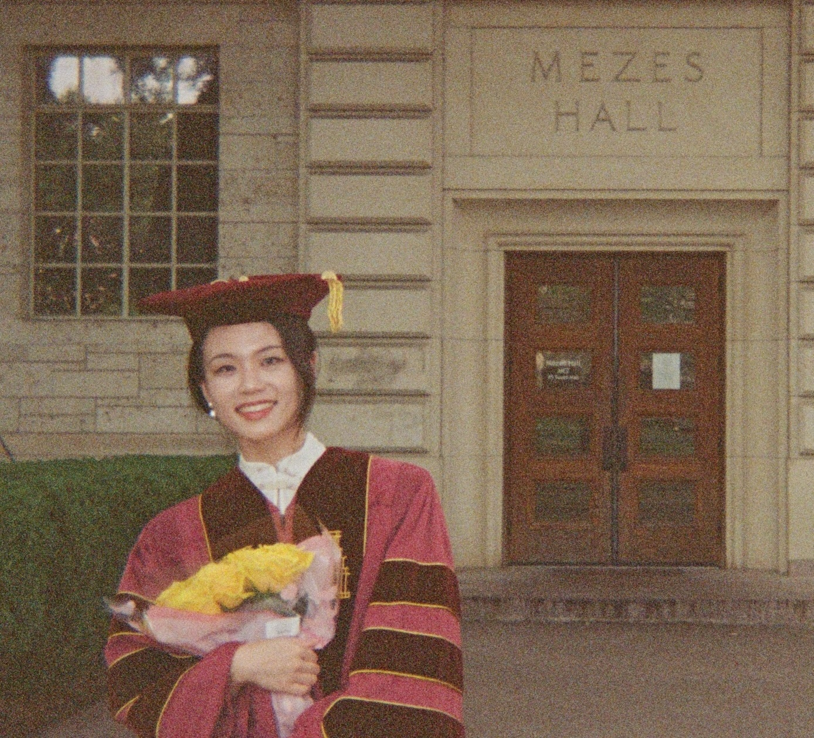

I am an assistant professor at the Department of Applied Mathematics and Statistics at Johns Hopkins University, starting from January 2025.
I was a Postdoctoral Research Scientist in the Department of Industrial Engineering and Operations Research at Columbia University from September 2023 to December 2024.
I completed my Ph.D. in the Department of Mathematics at the University of Texas at Austin.
My research lies at the intersection of data-driven decision making under uncertainty, stochastic and robust optimization, and machine learning. Specifically,
I received my bachelor degree in Mathematics and Applied Mathematics (Honors Program) at Xi’an Jiaotong University in China, where I was also a student of the Speical Class for the Gifted Young before my undergraduate study.
I am co-organizing an online reading group on Stochastic Control.
Schrödinger Bridge with Transport Relaxation
Submitted
| arXiv
Dynamic Portfolio Control with Provable Learning Guarantees
Revision at Management Science
| SSRN
Decision Making under Costly Sequential Information Acquisition:
the Paradigm of Reversible and Irreversible Decisions
Submitted
| arXiv
| SSRN
Decision-making with Side Information: A Causal Transport Robust Approach
Operations Research (accepted)
| OptOnline
A Short and General Duality Proof for Wasserstein Distributionally Robust Optimization
Operations Research 73(4), 2146-2155
| arXiv
Optimal Robust Policy for Feature-Based Newsvendor
Management Science 70(4), 2315-2329
| OptOnline
Integrating Feature Correlation in Differential Privacy with Applications in DP-ERM
AISTATS (2026)
Conditional Demographic Parity Through Optimal Transport
NeurIPS Workshop on Algorithmic Fairness through the Lens of Causality and Privacy (2022)
(original version)
| AAAI (2025)
(later accepted)
| arXiv
Haotian Zong, JHU AMS (2024 - )
EN.553.432/632 Bayesian Statistics Spring 2025, Fall 2025
EN.553.746 Stochastic Controls, Games, and Learning, Part I & IIFall 2025, Spring 2026
Lang Lang, JHU AMS
Hongyu Cheng, JHU AMS
Himanshu Sharma, JHU CSE
Aayush Mishra, JHU CS
The Directed Reading Program is an RTG program that pairs undergraduate students with graduate student mentors to undertake independent projects in mathematics.
Haoze Yan, on the topic of Lectures on Stochastic Programming Spring, Fall 2022
Yuxiang Gao, on the topic of Elements of Statistical Learning Spring 2022
Wenxuan Jiang, on the topic of Stochastic Calculus for Finance Fall 2021
Sonali Singh, on the topic of Stochastic Calculus for Finance Spring 2020
Mathematical Programming (2023 Meritorious Service Award)
Mathematics of Operations Research
Management Science
Operations Research
Production and Operations Management
Manufacturing & Service Operations Management
Finance & Stochastics
AISTATS
NeurIPS
ACM International Conference on AI in Finance
INFORMS 2021, Invited session of Learning and Decision-making with Contextual Information
INFORMS 2022, Invited session of Data-driven Decision Making
INFORMS 2023, Invited session of Decision-making under Uncertainty
ICSP 2023, Mini-symposium of Causal transport and adapted Wasserstein distance
INFORMS 2024, Invited session of Decision-making under Uncertainty
AI Researcher (Intern), JPMorgan Chase, New York, NY Summer 2022
Developed an efficient algorithm to achieve conditional demographic parity using causal transport distance
Preliminary result accepted by NeurIPS Workshop on Algorithmic Fairness through the Lens of Causality and Privacy
Meritorious Service Award, Mathematical Programming2023
Graduate School Summer Fellowship, UT Austin Summer 2021, Summer 2023
Graduate Continuing Bruton Fellowship, UT Austin Spring 2022
Professional Development Award, UT Austin Spring, Fall 2022
Frank Gerth III Teaching Excellence Award, UT Austin 2021